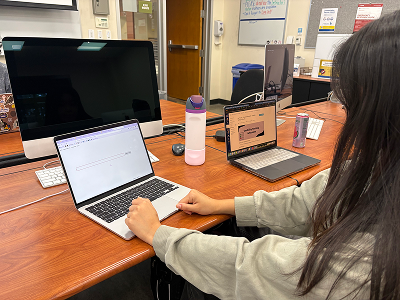
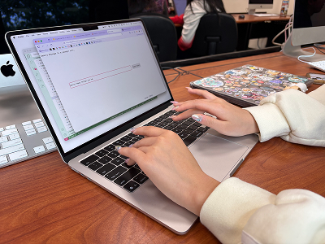

Overall, the response from participants was positive. The main source of feedback was feeling like some separation was needed between each person's response, whether with line breaks or displaying the messages in multiple letters. Participants found the visual design to be pleasant and nostalgic, while still hoping for it to be pushed further in the nostalgic direction.

Kaitlyn reading the promptParticipants found the site easy to navigate, expressing only some confusion when finding responses they hadn't written also on their letter, understanding only once I explained it verbally after.

Christina answering the promptAll the participants found the activity insightful and emotional, expressing they strong feelings about the topic of reconnecting with their younger self and feeling that the prompt encouraged that. The first participant, Kaitlyn, felt she didn't benefit from having other responses included in the letter; Christina enjoyed the idea, saying it shows how human we are and how we're all connected via similar experiences and struggles; and Lexi seemed somewhat indifferent about there being other responses, saying that if they were going to be there, that there should be some clear form of separation.
 Lexi reading the letter
Lexi reading the letter
I have an affinity towards simpler designs and I'm glad they liked this one, though I agree that the nostalgia they felt could be pushed further by improving certain details. The format and presentation of the letter[s] will be the biggest modification needed and figuring out how to balance the main goal of my project to encourage reflection and connection with our younger self/inner child, with the secondary concept of showing the connection we have as people who all reach moments in their life where they may reflect in this way.
Moving forward, I'll start with creating thumbnails and sketches for new ways to present the letter page, as well as sketching the prompt page to match the visual style, and get started implementing it with code. Once I've got that working, I'll find some participants to test the new version, perhaps one of my original participants as well to see their reactions on the changes, and continue iterating until I reach a final version I'm happy with.